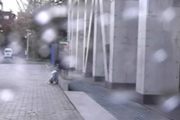

Adherent Raindrop Detection and Removal in Video
presented in CVPR 2013
Shaodi You, Robby T. Tan, Rei Kawakami and Katsushi Ikeuchi
Data
This data must be used for research purposes only.
In case you would like to publish work based on this data, please cite the following article:.
@article{you2015adherent,
title={Adherent Raindrop Modeling, Detection and Removal in Video},
author={You, Shaodi and Tan, Robby and Kawakami, Rei and Mukaigawa, Yasuhiro and Ikeuchi, Katsushi},
journal={IEEE Transaction on Pattern Recognition and Machine Intelligence}
year={2015},
publisher={IEEE} }
@article{you2013adherent,
title={Adherent Raindrop Detection and Removal in Video},
author={You, Shaodi and Tan, Robby T and Kawakami, Rei and Ikeuchi, Katsushi},
journal={IEEE Computer Society Conference
on Computer Vision and Pattern Recognition (CVPR 2013)},
year={2013} }
 |
|||
Data1 (41.9MB) |
Data2 (41.3MB) |
Data3 (51.9MB) |
Data4 (35.3MB) |